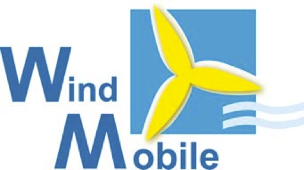

🌬️ 20+ Joer Windmobile
Festivitéiten & Feierlechkeeten · Schouljoer 2026 / 2027
„Mir bauen d'Zukunft mam Wand“
🏫 Lycée Technique d'Ettelbruck
🌍 20+ Joer international Gemeinschaft

All Klass baut hire eegene Rotor fir eng vertikal Wandmill. Ofginn a Jury am März. Haaptpräis (à discuter): e groussen Wandmillen-Workshop.
Concours-Säit besichen →Wandkanal, Wandenergie, Solarenergie a Stroumvëlo-Workshops, kombinéiert mat Visites guidées zu PV-Anlagen, Pédalec-Port, Piscine an Wasserrad.
All Workshops & Visites entdecken →„Vum Schoulprojet zur internationaler Plattform.“ Eng méi offiziell Sessioun mat Invitéen aus Ministère, Firmen a fréiere Participanten.
Reunioun vun alle fréiere Schüler, Fräiwëlleger, Atelier-Participanten a Frënn vum Projet.